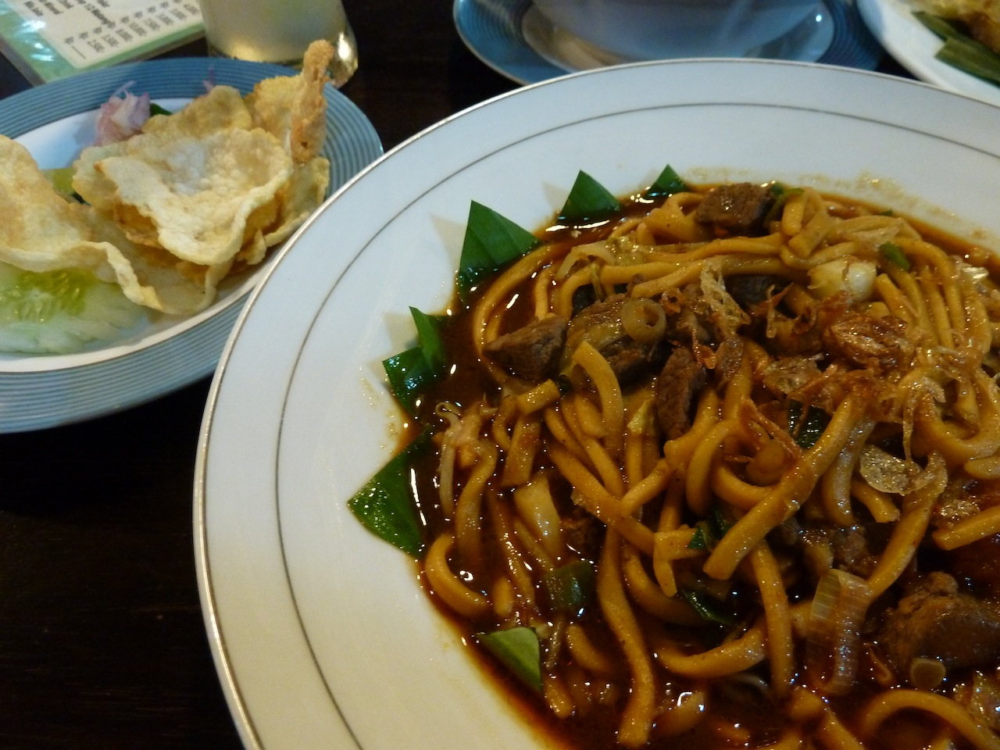

Mi Aceh (Provinsi Aceh)

Makanan khas daerah di Indonesia dari Aceh ini memiliki tekstur yang
tebal dan dicampur dengan irisan daging serta bumbu-bumbu rempah yang
kuat. Mie Aceh biasanya disajikan dengan digoreng, direbus atau ditumis.
Selain itu juga bisa disajikan dengan tambahan seafood seperti kepiting,
udang dan cumi.
Rendang

Makanan khas Indonesia dari Sumatera Barat ini pernah dinobatkan sebagai
makanan terlezat di dunia. Makanan dari daging sapi yang dimasak dengan
santan kelapa serta bumbu rempah selama berjam-jam ini memang begitu
terkenal. Rasanya yang gurih dan juga nikmat, sukses membuat makanan
khas daerah Sumatera Barat ini begitu disukai banyak orang.
Seruit

Seruit merupakan makanan khas Indonesia yang berasal dari Lampung.
Makanan ini terbuat dari ikan yang dibakar dan disajikan dengan sambal
terasi atau tempoyak atau mangga. Jika kamu sedang berkunjung ke
Lampung, tak ada salahnya untuk mencicipi kuliner satu ini.